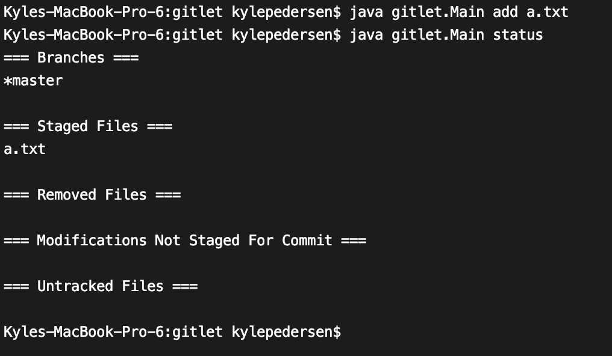
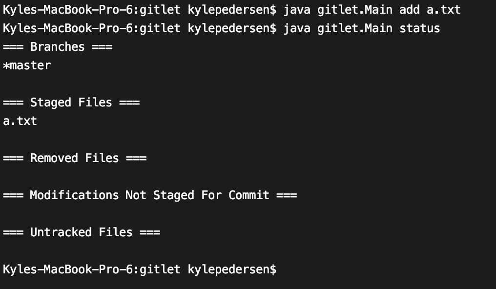

Gitlet
Project Overview
If there is a project that makes you feel capable of coding anything, it is this 1500-line Gitlet project. Developed by me and my project partner in our CS 61B class after over lines of written, Gitlet serves as a scaled down version of Git. Below is a basic walkthrough of how Gitlet works.
Use Case Example
Imagine that you are writing a biography about yourself on your computer and have made a folder with all of the chapters represented as Word documents. Before actually writing your book, you have to brainstorm ideas for the book, but you want to ensure that none of your ideas get lost in the past once they are changed. This is where Gitlet comes into play; by running the init command in the terminal, there will be a .gitlet folder created that will save all of the versions of the files you edit so that you can switch between versions. What a life-saver!

It is now time to brainstorm your hobbies, so you create a file called a.txt where you will list all of your hobbies. You start by writing "I really like dogs." and run the add a.txt command, which will tell Gitlet that you want to take a keep track of the a.txt file (which just contains the sentence you just wrote). This does not save the file yet, but Gitlet knows that when the commit command is run with a message in quotes, it will save all of the added files into the "commit" snapshot. Here, we see that when the status command is run, all the added and removed files will be listed along with the branches you've created (explained later).
 

When the log command is entered, all of the commits will be displayed with their date, time, message entered, and SHA-1 unique identifier - a hashing algorithm that gives the input a unique string to be identified by. As we see here, the commits included are the default commit when init was entered and the "dogs" commit that was just entered.


Now, let's say that you go back to the a.txt file and decide that you actually like cats much more than dogs, so you add the text below, add the a.txt file, and runa commit with the "cats" message. Now, when log is run, the "cats" commit will also pop up.
However, you are very unconvinced about your interest in cats, and you wish to make the a.txt file say that you actually like dogs. By simply running the reset command with 6 digits of the SHA-1 id (that's right, you don't have to enter the whole thing, Gitlet takes care of matching the SHA-1 id's for you), the file(s) will now be automatically changed on your computer to whatever their contents was at the time of the commit you requested to reset to; instead of the file having the most recent cats inclusion, it now is about dogs like you originally wrote!

Other Features
The previous explanation was just a very simple overview of how the Gitlet program works, but here are other commands available to run:
- Remove Files: If a file was previously added with the
addcommand, it can easily be undone by running therm(remove) command. - Add/Remove Branches: In Gitlet (and Git), a branch can be thought of an entirely different chain of commits - easily visualized by the picture below where the master branch contains every commit from the leftmost commit to the HEAD of the master branch, and the cool-beans branch contains every commit leftmost commit to the front of the cool-beans branch. So, to add or remove a branch, one would enter
branch [branch name]orrm-branch [branch name], respectively. -
Checkout: There are three types of checkout:
- When you checkout to a branch (by entering
checkout [branch name]), you will then be only working on that branch, and your current working branch (denoted by the *) will be the branch to which you checkout. - To checkout to a filename (by entering
checkout -- [file name]), current file's version as it is in the most recent commit and overwrites the contents of the file as is currently exists. - Instead of a filename based on what its contents is in the most recent commit, you can checkout to a specific commit SHA-1 ID by running
checkout [commit id] -- [file name]. Now, the file being overridden will be based on the file contents of the commit id rather than the most recent commit as default.
- When you checkout to a branch (by entering
- Merge: Let's say that you are working on the master branch but want to make a new commit that also includes all of the contents from the cool-beans branch. By running the
merge [branch name], the current branch will make a new commit with the contents in the other specified branch. In doing so it will add all the files in each branch, and if both files were modified in both branches, it will display a message in the newly edited file as so:<<<<<<< HEAD contents of file in current branch======= contents of file in given branch>>>>>>>

Project challenges: Aside from being thrown into such a large project, I had a lot of trouble figuring out how to get started such that everything would be saved in the .gitlet folder that was created. Since each command is just the entire program running once then stopping, I had to write functions that would download and upload the contents to and from the .gitlet folder and converted the files between usable words and the byte arrays as they were stored in the .gitlet folder. This way, all the data since the init command was run wouldn't be lost. Also, since we were using the SHA-1 code to uniquely identify each file contents, it took me a while to wrap my head around how to use the SHA-1 ID to determine if the data matched what I needed.
What I learned: This project cemented in my brain that I should expect to debug my code while coding - it is inevitable. Before, a small part of me still associated the debugging process as a part of my poor programming skills, and I would get discouraged. However, I really believe that one's coding abilities and the debugging process shouldn't be paired together. With this mindset, I am open to investigating my errors in code and am more patient in the development process.